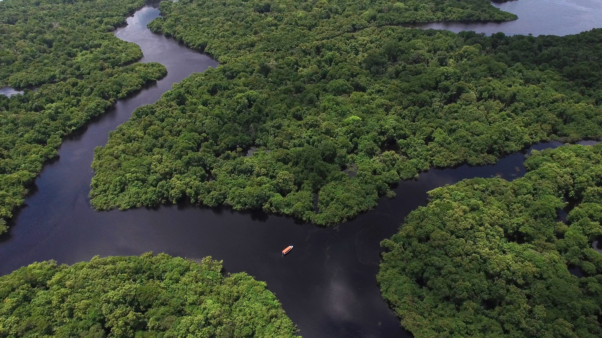
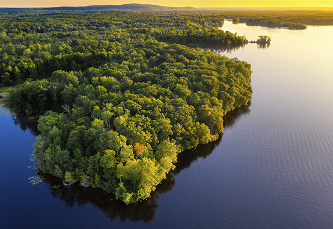
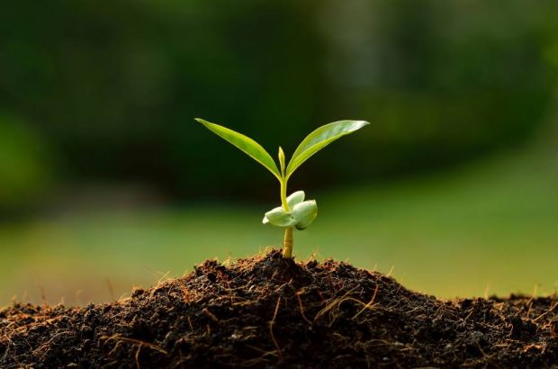
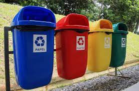

CONSCIENTIZAR É PRECISO

A floresta é parte integrante do nosso ecossistema, tendo uma importância vital para o equilíbrio ambiental e ecológico do nosso planeta. Preservar as florestas é sinônimo de proteger e a garantir a qualidade de vida, é preservar o futuro. Além da beleza paisagística as florestas constituem habitats únicos para variadíssimas espécies de seres vivos, incluindo comunidades humanas. As florestas ocupam cerca de 30% da área terrestre do nosso planeta e contêm cerca de 70% do carbono presente nos seres vivos. O desenvolvimento da floresta é um processo muito lento e é necessário muito tempo para que se estabeleçam os equilíbrios fundamentais entre as diferentes espécies e o meio físico envolvente.
CONHEÇA NOSSA HISTORIA
Na década de 1980 grandes áreas de florestas foram substituídas por pastagens na Amazônia. Naquela época, o movimento dos seringueiros, no Acre, unia forças para empatar a devastação e garantir o direito de posse das suas colocações. Movidos pela resistência dos guardiões da floresta, no dia 30 de setembro de 1988, na cidade de Rio Branco, estado do Acre, professores, estudantes universitários e representantes do movimento social, incluindo o ativista e seringueiro Chico Mendes, criaram a Associação SOS Amazônia, tendo como objetivo principal defender a causa extrativista e proteger a Floresta Amazônica, apoiando as populações tradicionais..

CONTRIBUA
PRESERVE AS ARVORES

Sim, preservando as arovres da sua cidade você já estará contribuindo para a manutenção da flora brasileira e para a redução do aquecimento global.
POUPE AGUA
Poupando água você estará contribuindo diretamente para a manuitenção dos recursos naturais e prosperidade humana.
RECICLE O LIXO

Recicle o seu lixo para que ele seja devidamente tratado e evite que ele seja descartado em lugar impróprio, poluindo o meio ambiente.